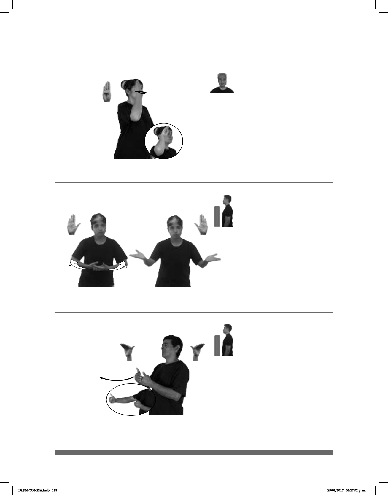

158
(B-P 143)
______muy
pos-MI AMIGO dm-RODOLFO DADIVOSO
Mi amigo Rodolfo es muy dadivoso.
Seña: SS
B-P.2
Palmas hacia arriba.
A la altura del plexo,
MD sobre MB.
Las manos parten de
un mismo punto y luego se abren
hacia los lados.
Mejillas
adj. Liberal, generoso,
propenso a hacer dádivas.
(B-P 144)
1
2
DE-AHORA-EN-ADELANTE DIARIO pro-YO IR CORRER
De ahora en adelante voy a correr todos los días.
Seña: SB
MD y MB B-P.7
MD y MB palmas
hacia adentro.
A la altura del pecho.
MD delante de MB.
La MD se mueve
formando un arco hacia enfrente.
1. loc. adv. En el
futuro, a partir de un momento
determinado. 2. adv. En un lugar o
una posición más avanzada.
(B-P 142)
__muy
CUBA
allá
CALOR
En Cuba hace mucho calor.
Seña: SM
B-P.1
La palma inicia hacia
adentro y termina hacia afuera.
Sobre la sien.
El antebrazo gira y
cambia la orientación de la mano,
pasa de mostrar el dorso a mostrar
la palma.
País del Caribe
americano cuya capital es La
Habana.
DLSM COMISA.indb 158 25/09/2017 02:27:52 p. m.